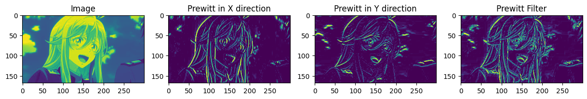
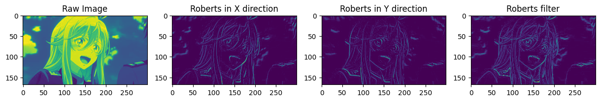
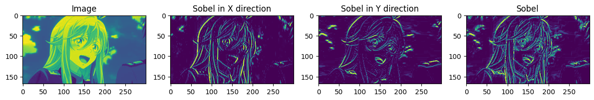
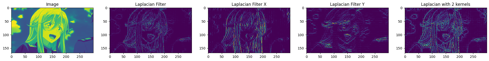

2024-04-27 · Image Processing, Edge Detection
Xin chào các bạn,
Nối tiếp series phần 1 của bộ lọc, bài post này sẽ giới thiệu thêm một vài bộ lọc nâng cao hơn của phần 1 với trọng tâm chính là tìm cạnh trong ảnh (edge detection).
Phát hiện cạnh là giải thuật để trích xuất ra tất cả các cạnh trong một bức ảnh. Việc trích xuất ra được edge này có rất nhiều công dụng hữu ích cho việc phát hiện đường thẳng, trích xuất features, phát hiện blob, ... Và những ứng dụng của nó vào khâu tiền xử lý của những thuật toán này sẽ được mình cover vào các bài khác (các bạn nhớ đón đọc nhé).
Cách để tìm ra cạnh trong một bức ảnh đơn giản là tìm những đoạn mà có sự thay đổi lớn giữa các giá trị pixels hoặc giá trị gradient tại điểm đó lớn. Mình lấy một ví dụ minh họa như sau:
Image = [0. 1. 1. 0.]
[0. 1. 1. 0.]
[0. 1. 1. 0.]
[0. 1. 1. 0.]
Giả sử ở hình trên, ta thấy được rằng có 1 cạnh nằm giữa tấm ảnh (2 cột 1.). Và ta muốn lọc ra được cạnh này.
Nếu quan sát có thể nhận thấy rằng, ở những cạnh như vậy giá trị gradient sẽ có giá trị lớn. Và đó cũng là nguyên lý mà nhiều thuật toán áp dụng để tìm ra cạnh trong một bức ảnh. Ta sẽ dùng gradient để xác định xem liệu đó có phải là cạnh hay không. Công thức để tính gradient với các pixels như sau:
Với
Trong phần này, mình sẽ giới thiệu các bộ lọc cạnh cũng như demo code để minh họa rõ hơn về cách hoạt động của các bộ lọc này.
Bộ lọc Prewitt filter được phát triển bởi Judith M. S. Prewitt và bộ lọc này hoạt động y như phần lý thuyết mình đã mô tả ở trên. Tuy nhiên, Prewitt đã có chỉnh sửa một chút là dùng đạo hàm giữa 2 pixel cách nhau 1 pixel thay vì lấy 2 pixels liên tiếp để tính đạo hàm.
kernelX = [-1 0 1]
[-1 0 1]
[-1 0 1]
kernelY = [-1 -1 -1]
[0 0 0]
[1 1 1]
Code
### Implement Prewitt Filter
prewittGx = np.array([[-1, 0, 1],
[-2, 0, 2],
[-1, 0, 1]])
prewittGy = np.array([[-1, -2, -1],
[0, 0, 0],
[1, 2, 1]])
prewittX = cv2.filter2D(image, -1, prewittGx)
prewittY = cv2.filter2D(image, -1, prewittGy)
prewitt = prewittX + prewittY
fig, ax = plt.subplots(1, 4, figsize = (15, 15))
ax[0].imshow(image)
ax[0].set_title("Prewitt in X direction")
ax[1].imshow(prewittX)
ax[1].set_title("Prewitt in X direction")
ax[2].imshow(prewittY)
ax[2].set_title("Prewitt in Y direction")
ax[3].imshow(prewitt)
ax[3].set_title("Prewitt Filter")

Roberts filter là bộ lọc được tìm ra bởi Lawrence Roberts vào năm 1963. Đây có thể được coi như là một trong những bộ lọc được ra đời sớm nhất trong tất cả các bộ lọc edge detection.
Vì nó được ra mắt sớm hơn các bộ lọc cạnh khác nên có có cấu tạo khá đơn giản. Bộ lọc bao gồm 2 ma trận 2x2 như sau:
kernelX = [-1 0]
[0 1]
kernelY = [0 1]
[-1 0]
Tuy được gán là G_x \text{và } G_y nhưng hai ma trận này không tính gradient theo hai phương đó mà tính theo 2 phương chéo nhau (mình đặt vậy để dễ phân biệt).
Code
### Implement Roberts Filter
robertsGx = np.array([[1, 0],
[0, -1]])
robertsGy = np.array([[0, 1],
[-1, 0]])
robertsX = cv2.filter2D(image, -1, robertsGx)
robertsY = cv2.filter2D(image, -1, robertsGy)
roberts = robertsX + robertsY
fig, ax = plt.subplots(1, 4, figsize = (15, 15))
ax[0].imshow(image)
ax[0].set_title("Raw Image")
ax[1].imshow(robertsX)
ax[1].set_title("Roberts in X direction")
ax[2].imshow(robertsY)
ax[2].set_title("Roberts in Y direction")
ax[3].imshow(roberts)
ax[3].set_title("Roberts filter")

Tên đầy đủ của bộ lọc này là Sobel-Feldman được đặt tên theo 2 người cùng nghiên cứu và phát triển nó tại AI lab của đại học Standford. Bộ lọc Sobel về cơ bản giống y chang bộ lọc Prewitt, chỉ khác ở chỗ phần pixel trọng tâm của kernel sẽ được đánh trọng số là 2 thay vì 1 như Prewitt filter.
Sobel filter hoạt động theo kiểu tích chập. Nó gồm hai ma trận G_x, \text{ và } G_y và nó có dạng như sau:
kernelX = [-1 0 1]
[-2 0 2]
[-1 0 1]
kernelY = [-1 -2 -1]
[0 0 0]
[1 2 1]
Code
### Implement Sobel Filter
sobelGx = np.array([[-1, 0, 1],
[-2, 0, 2],
[-1, 0, 1]])
sobelGy = np.array([[-1, -2, -1],
[0, 0, 0],
[1, 2, 1]])
sobelX = cv2.filter2D(image, -1, sobelGx)
sobelY = cv2.filter2D(image, -1, sobelGy)
sobel = sobelX + sobelY
fig, ax = plt.subplots(1, 4, figsize = (15, 15))
ax[0].imshow(image)
ax[0].set_title("Image")
ax[1].imshow(sobelX)
ax[1].set_title("Sobel in X direction")
ax[2].imshow(sobelY)
ax[2].set_title("Sobel in Y direction")
ax[3].imshow(sobel)
ax[3].set_title("Sobel")

Laplacian filter áp dụng thêm đạo hàm bậc 2 để tìm ra cạnh. Việc sử dụng đạo hàm bậc 2 này sẽ giúp phát hiện ra nhiều cạnh hơn so với các phương pháp trên. Tuy nhiên, nó cũng sẽ dễ bị ảnh hưởng bởi noise nhiều hơn.
Công thức toán
Theo phương x,
Theo phương y,
Nếu thích, chúng ta có thể tách chúng ra thành hai bộ lọc như phương pháp Sobel hoặc gom lại thành một. Nếu tách ra, nó sẽ có dạng như sau:
kernelX = [1 -2 1]
[1 -2 1]
[1 -2 1]
kernelY = [1 1 1]
[-2 -2 -2]
[1 1 1]
Và nếu gom lại, chúng sẽ có dạng như sau:
kernel = [0 1 0]
[1 -4 1]
[0 1 0]
Code
### Implement Laplacian Filter
laplacianKernel = np.array([[0, 1, 0],
[1, -4, 1],
[0, 1, 0]])
laplacianKernelX = np.array([[1, -2, 1],
[1, -2, 1],
[1, -2, 1]])
laplacianKernelY = np.array([[1, 1, 1],
[-2, -2, -2],
[1, 1, 1]])
laplacianFiltered = cv2.filter2D(image, -1, laplacianKernel)
laplacianFilteredX = cv2.filter2D(image, -1, laplacianKernelX)
laplacianFilteredY = cv2.filter2D(image, -1, laplacianKernelY)
laplacianFiltered_ = laplacianFilteredX + laplacianFilteredY
fig, ax = plt.subplots(1, 5, figsize = (25, 25))
ax[0].imshow(image)
ax[0].set_title("Image")
ax[1].imshow(laplacianFiltered)
ax[1].set_title("Laplacian Filter")
ax[2].imshow(laplacianFilteredX)
ax[2].set_title("Laplacian Filter X")
ax[3].imshow(laplacianFilteredY)
ax[3].set_title("Laplacian Filter Y")
ax[4].imshow(laplacianFiltered_)
ax[4].set_title("Laplacian with 2 kernels")

Trong 4 bộ lọc trên, bộ lọc Laplacian tìm ra được nhiều cạnh nhất tuy nhiên nó cũng bị noise nhiều nhất. Việc dùng bộ lọc nào sẽ tùy thuộc vào nhu cầu của các bạn. Nếu hình có ít nhiễu và muốn lọc ra được nhiều cạnh nhất thì bộ lọc Laplacian là tối ưu nhất, còn 3 bộ lọc kia có sự khác biệt không đáng kể do chúng đều dùng đạo hàm bậc 1.
2. Prewitt Operator - Wikipedia
4. Discrete Laplace Operator - Wikipedia
Cited as:
Le Hoang Viet. "Giải thích và implement các bộ lọc trong xử lý ảnh - Phần 2". Le Hoang Viet's Homepage, April 2024. https://mikyx-1.github.io/blog/image-filters-p2.html
Or the BibTeX entry:
@misc{le2024imagefiltersp2,
title = {Giải thích và implement các bộ lọc trong xử lý ảnh - Phần 2},
author = {Le, Hoang Viet},
journal = {Le Hoang Viet's Homepage},
year = {2024},
month = {April},
url = {https://mikyx-1.github.io/blog/image-filters-p2.html}
}← Back to the blog index. Send feedback by email.